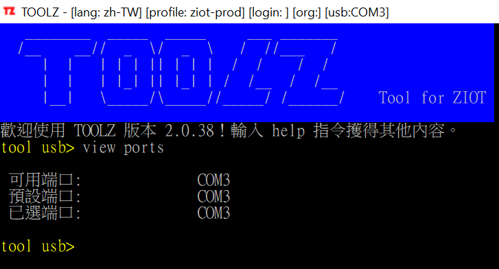

Toolz 命令
2019-12-04
通用命令
通用命令 是指在不同模組中均可用的命令。
cd
轉換模組。cd usb 轉換到 usb 模組， cd .. 轉換到根模組。
-
語法:
cd <module><module>有下列可用值:可用值 可用值 alias 描述 ..-- 轉換到根模組 usb轉換到 usb 模組 languageslang,langs轉換到 usb 模組 profilesprof轉換到 profiles 模組 workspacews轉換到 workspace 模組
clear
清空介面上的已執行內容。
- Alias:
cls
help
顯示當前模組的幫助文檔內容，可用的命令清單。
quit
離開 toolz 。
- Alias:
exit
根模組
doc
開啟電腦預設的瀏覽器查看在線文檔。
- 配置參數:
homepage
login
登入選用的 profile 中定義的 server。
- 配置參數:
profiles
logout
登出選用的 profile 中定義的 server。
search
在網庫中尋找 tool.exe 最新的版本。
- 配置參數:
repository.url
languages 模組
use
轉換 toolz 執行中介面語言。
-
語法:
use <lang> [--save]<lang>為語言包的編碼。
--save表示同時把該語言包設定為預設例子: 轉換介面語言為英文
tool languages> use en-US
例子: 轉換介面語言為繁體中文，並保存成 toolz 的預設語言
tool languages> use zh-TW --save
view .
查看 toolz 所有已安裝的語言包。
profiles 模組
add
新增一筆 profile 記錄。
-
語法:
add [<name> [<srv>] ]<name>: profile 名稱。名稱由 ASCII 碼組成，當中不得有空格。
<srv>: profile 指向的 ZIOT 服務器路徑。格式必須為domain:port
如果不提供命令參數，add命令會執行中詢問你。
login
參考 根模組命令 login
logout
參考 根模組命令 logout
ping
對一個 地址 執行 ping 或 tcp 測試。
-
語法:
ping <address><address>: 地址。可以是 profile 的 name 或其他domain:port。
use
選用一個 profile，以供之後登入。
-
語法:
use <name> [--save]<name>: profile 名稱。名稱由 ASCII 碼組成，當中不得有空格。
--save: 表示同時把該 profile 設定為預設
view
查看已選用的 Profile 的內容。
view .
查看所有 Profiles 的內容。
workspace 模組
config edit
開啟設定好編輯器，編輯 toolz 配置檔 (config.json)。
-
配置參數:
workspace.editor.invoke expressionNote
toolz 預設的編輯器是 VS Code (Microsoft Visual Studio Code)。
如果你的電腦沒有 VS Code 又沒有修改配置參數，執行此介命令時可能會報錯。
config reload
在不用退出 toolz 情況下，重載 配置檔 (config.json)。
view
查看 Workspace 配置內容。
usb 模組
cmd
列出 toolz 已安裝的 預設指令，或者在 Basebox 執行 預設指令 或腳本程式。
Note
詳細說明，請參考 預設指令 。
-
語法:
cmd列出 toolz 已安裝的 預設指令
-
語法:
cmd <command><command>: 預設指令 或腳本程式。
config
便新 Basebox 的 WiFi 設定 (SSID, Password)。此命令只適用於版本為 BASE03F3 的 Basebox。
Failure
此命令將會在之後的 toolz 的版本移除，不建議使用。
detect mos
檢測 Basebox 的 MOS 版本。此命令會自動重啟 Basebox。
-
語法:
detect mos [--more]--more: 表示更多信息 -
配置參數:
workspace.mos.directory, - 配置參數:
workspace.mos.registry
detect lib
檢測 Basebox 已安裝的 Basebox library。
flash
開啟 Flasher 程式以安裝 MOS。
- 配置參數:
workspace.mos.directory, - 配置參數:
workspace.mos.default, - 配置參數:
workspace.flasher
Note
- toolz 通過 plugins 之類的設計架構來啟動 Flasher 程式
- 預設的 Flasher 程式是 NodeMCU Flasher, 可以參考其 github project.
- 目前 toolz 的 plugins 架構設計仍不成熟。當中有可能被 Anti-Virus 程式擋住開不了。如果你是用 Windows Defender，可參考 MS的文檔 啟用第一次看見時封鎖. tool.exe 經 Windows Defender 掃描過是安全的。
- 預設的 firmware image 檔 (即 MOS) 是
MOS-V02-00.bin，第一次使用時注意 Flasher 程式的Config頁內的 image 檔是否一致。
動畫: flash
install
列出 toolz 已安裝的安裝包，或 執行指定的 安裝包，或 把指定的 安裝包 複製新增的另一 安裝包。
-
語法:
install列出已安裝的安裝包。
-
語法:
install <installer>執行的安裝包，安裝到 Basebox 中。
<installer>: 要執行的安裝包的名字。 -
語法:
install <installer> -to <newInstaller>複製指定安裝包至新增的另一安裝包。
<installer>: 被複製的安裝包的名字。
<newInstaller>: 新增的安裝包的名字。
monitor
把 toolz usb 進入監視模式，監視 USB port 端口輸出。即 Basebox 的輸出。在 toolz usb 監視模式中，按 Q 退出監視模式。
- Alias:
mon
register
註冊 Basebox。把 Basebox 註冊到用戶登入的 profile 的 ZIOT server 的一個組織中。
upload file
上傳一個文本檔案到 Basebox。
-
語法:
upload file <filename><filename>: 被上傳的文本檔案路徑。
use port
選用一個 USB 端口。
-
語法:
use port <portName><portName>: USB 端口名。
view file
查看 Basebox 中的文本文檔的內容。
-
語法:
view file <filename><filename>: Basebox 中的文本文檔的名字。
view ports
查看可用的 USB 端口。
-
Alias:
view port例子:
view ports